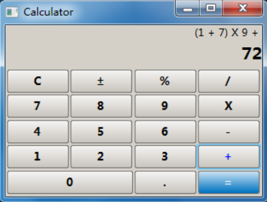
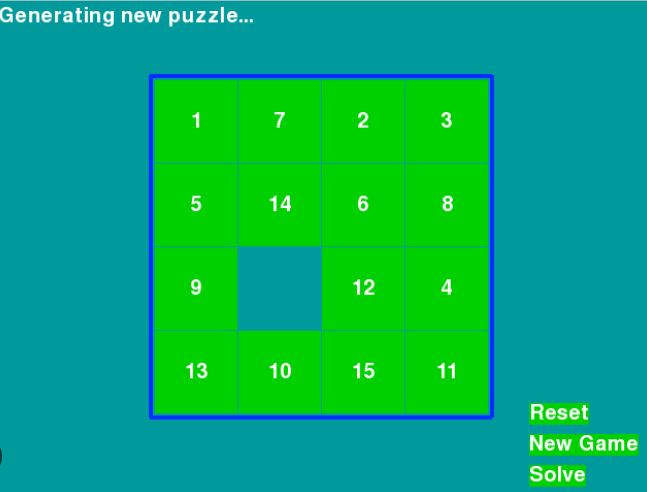
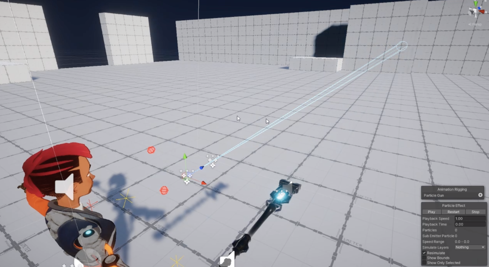

Expiriența de lucru
Profesie, companie, anul
- Elev: 2013-2025
Educație
CEITI
Programare și analiza produselor de program, 4 ani, 2021-2025
Limbi de programare cunoscute, expiriență
C++
3 ani
Java
2 ani
SQL
2 ani
Despre mine
Sunt devotat lucrului și dezvoltării personale. Am dorința de a mă dezvolta și de a realiza proiecte complicate, dar și interesante. Posed de toate calitățile necesare pentru a deveni un profesional în profesia sa

Proiect simplu de calculator, scris pe baza limbajului C++

Baza de date a unei companii, SQL

Joc simplu de aranjare a numerelor în ordine; C++

O jacă simplă pe Unity, legată cu BD SQL